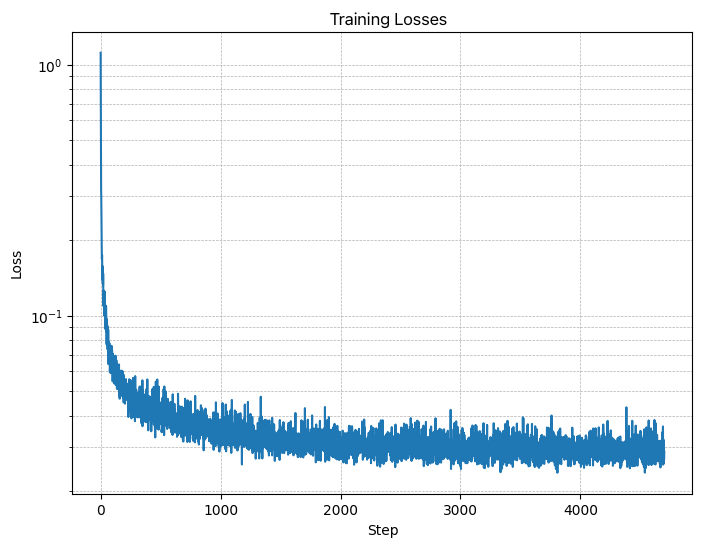

Note: this is an updated, clearer version of the part B instructions. For the old version, please see here.
Let's warmup by building a simple one-step denoiser. Given a noisy image
$z$, we
aim to train a denoiser $D_\theta$ such that it maps $z$ to a clean
image $x$. To do so, we can optimize over an L2 loss:
$$L = \mathbb{E}_{z,x} \|D_{\theta}(z) - x\|^2 \tag{B.1}$$
The diagram above uses a number of standard tensor operations defined as
follows:
where:
- Conv2d(kernel_size, stride, padding) is
nn.Conv2d()
- BN is
nn.BatchNorm2d()
- GELU is
nn.GELU()
- ConvTranspose2d(kernel_size, stride, padding) is
nn.ConvTranspose2d()
- AvgPool(kernel_size) is
nn.AvgPool2d()
D is the number of hidden channels and is a
hyperparameter that we will set ourselves.
At a high level, the blocks do the following:
- (1) Conv is a convolutional layer that doesn't
change the image resolution, only the channel dimension.
- (2) DownConv is a convolutional layer that
downsamples the tensor by 2.
- (3) UpConv is a convolutional layer that upsamples
the tensor by 2.
- (4) Flatten is an average pooling layer that
flattens a 7x7 tensor into a 1x1 tensor. 7 is the resulting height and
width after the downsampling operations.
- (5) Unflatten is a convolutional layer that
unflattens/upsamples a 1x1 tensor into a 7x7 tensor.
- (6) Concat is a channel-wise concatenation between
tensors with the same 2D shape. This is simply
torch.cat().
We define composed operations using our simple operations in order to
make our network deeper. This doesn't change the tensor's height, width,
or number of channels, but simply adds more learnable parameters.
- (7) ConvBlock, is similar to Conv
but includes an additional Conv. Note that it has
the same input and output shape as (1) Conv.
- (8) DownBlock, is similar to
DownConv but includes an additional
ConvBlock. Note that it has the same input and
output shape as (2) DownConv.
- (9) UpBlock, is similar to UpConv
but includes an additional ConvBlock. Note that it
has the same input and output shape as (3)
UpConv.
1.2 Using the UNet to Train a Denoiser
Recall from equation 1 that we aim to solve the following denoising
problem:
Given a noisy image $z$, we
aim to train a denoiser $D_\theta$ such that it maps $z$ to a clean
image $x$. To do so, we can optimize over an L2 loss
$$
L = \mathbb{E}_{z,x} \|D_{\theta}(z) - x\|^2.
$$
To train our denoiser, we need to generate training data pairs of ($z$,
$x$), where each $x$ is a clean MNIST digit. For each training batch, we
can generate $z$ from $x$ using the the following noising process:
$$
z = x + \sigma \epsilon,\quad \text{where }\epsilon \sim N(0, I). \tag{B.2}
$$
Visualize the different noising processes over $\sigma = [0.0, 0.2, 0.4,
0.5, 0.6, 0.8, 1.0]$, assuming normalized $x \in [0, 1]$.
It should be similar to the following plot:
Figure 3: Varying levels of noise on MNIST digits
1.2.1 Training
Now, we will train the model to perform denoising.
- Objective: Train a denoiser to denoise noisy image $z$ with
$\sigma = 0.5$ applied to a clean image $x$.
- Dataset and dataloader: Use the MNIST dataset via
torchvision.datasets.MNIST with flags to access training
and test sets. Train only on the training set. Shuffle the dataset
before creating the dataloader. Recommended batch size: 256. We'll
train over our dataset for 5 epochs.
- You should only noise the image batches when fetched from the
dataloader so that in every epoch the network will see new noised
images, improving generalization.
- Model: Use the UNet architecture defined in section 1.1 with
recommended hidden dimension
D = 128.
- Optimizer: Use Adam optimizer with learning rate of
1e-4.
Figure 4: Training Loss Curve
You should visualize denoised results on the test set at the end of
training. Display sample results after the 1st and 5th epoch.
They should look something like these:

Figure 5: Results on digits from the test set after 1
epoch of training
Figure 6: Results on digits from the test set after 5
epochs of training
1.2.2 Out-of-Distribution Testing
Our denoiser was trained on MNIST digits noised with $\sigma = 0.5$. Let's
see how the denoiser performs on different $\sigma$'s that it wasn't
trained for.
Visualize the denoiser results on test set digits with varying levels of
noise $\sigma = [0.0, 0.2, 0.4, 0.5, 0.6, 0.8, 1.0]$.
Figure 7: Results on digits from the test set with varying
noise levels.
Deliverables
- A visualization of the noising process using $\sigma = [0.0,
0.2, 0.4, 0.5, 0.6, 0.8, 1.0]$. (figure 3)
- A training loss curve plot every few iterations during the whole
training process (figure 4).
- Sample results on the test set after the first and the 5-th epoch
(staff solution takes ~7 minutes for 5 epochs on a Colab T4 GPU).
(figure 5, 6)
- Sample results on the test set with out-of-distribution noise levels
after the model is trained. Keep the same image and
vary $\sigma = [0.0, 0.2, 0.4, 0.5, 0.6, 0.8, 1.0]$. (figure 7)
Hint
- Since training can take a while, we strongly recommend that you
checkpoint your model every epoch onto your personal Google
Drive.
This is because Colab notebooks aren't persistent such that if you are
idle for a while, you will lose connection and your training progress.
This consists of:
- Google Drive mounting.
- Epoch-wise model & optimizer checkpointing.
- Model & optimizer resuming from checkpoints.
Part 2: Training a Diffusion Model
Now, we are ready for diffusion, where we will train a UNet model that can iteratively denoise an image.
We will implement DDPM in
this part.
Let's revisit the problem we solved in equation B.1:
$$L = \mathbb{E}_{z,x} \|D_{\theta}(z) - x\|^2.$$
We will first introduce one small difference: we can change our UNet to predict
the added noise $\epsilon$ instead of the clean image $x$ (like in part A
of the project).
Mathematically, these are equivalent since $x = z - \sigma \epsilon$ (equation B.2).
Therefore, we can turn equation B.1 into the following:
$$L = \mathbb{E}_{\epsilon,z} \|\epsilon_{\theta}(z) - \epsilon\|^2
\tag{B.3}$$
where $\epsilon_\theta$ is a UNet trained to predict noise.
For diffusion, we eventually want to sample a pure noise image $\epsilon
\sim N(0, I)$ and generate a realistic image $x$ from the noise.
However, we saw in part A that one-step denoising does not
yield good results. Instead, we need to iteratively denoise the
image for better results.
Recall in part A that we used equation A.2 to generate noisy images $x_t$
from $x_0$ for some timestep $t$ for $t \in \{0, 1, \cdots, T\}$:
$$ x_t = \sqrt{\bar\alpha_t} x_0 + \sqrt{1 - \bar\alpha_t} \epsilon
\quad \text{where}~ \epsilon \sim N(0, 1).$$
Intuitively, when $t = 0$ we want $x_t$ to be the clean image $x_0$, when $t = T$ we want $x_t$ to be pure noise $\epsilon$, and for $t \in \{1, \cdots, T-1\}$, $x_t$ should be some linear combination of the two.
The precise derivation of $\bar\alpha$ is beyond the scope of this project
(see DDPM paper for more
details). Here, we provide you with the DDPM recipe to build a list $\bar\alpha$ for $t \in \{0, 1, \cdots, T\}$ utilizing lists $\alpha$ and $\beta$:
- Create a list $\beta$ of length $T$ such that $\beta_0 = 0.0001$ and $\beta_T = 0.02$ and all other elements $\beta_t$ for $t \in \{1, \cdots, T-1\}$ are evenly spaced between the two.
- $\alpha_t = 1 - \beta_t$
- $\bar\alpha_t = \prod_{s=1}^t \alpha_s$ is a cumulative product of $\alpha_s$ for $s \in \{1, \cdots, t\}$.
Because we are working with simple MNIST digits, we can afford to have a smaller $T$ of 300 instead of the 1000 used in part A. Observe how $\bar\alpha_t$ is close to 1 for small $t$ and close to 0 for $T$. $\beta$ is known as the variance schedule; it controls the amount of noise added at each timestep.
Now, to denoise image $x_t$, we could simply apply our UNet $\epsilon_\theta$ on $x_t$ and get the noise $\epsilon$. However, this won't work very well because the UNet is expecting the noisy image to have a noise variance $\sigma = 0.5$ for best results, but the variance of $x_t$ varies with $t$.
One could train $T$ separate UNets, but it is much
easier to simply condition a single UNet with timestep $t$, giving us our final objective:
$$L = \mathbb{E}_{\epsilon,x_0,t} \|\epsilon_{\theta}(x_t, t) -
\epsilon\|^2. \tag{B.4}$$
2.1 Adding Time Conditioning to UNet
We need a way to inject scalar $t$ into our UNet model to condition it. There are many ways to do this. Here is what we suggest:

Figure 8: Conditioned UNet
This uses a new operator called
FCBlock (fully-connected block) which we use to inject the conditioning signal into the UNet:

Figure 9: FCBlock for conditioning
Here Linear(F_in, F_out) is a linear layer with
F_in input features and F_out output
features. You can implement it using nn.Linear.
Since our conditioning signal $t$ is a scalar, F_in should be of size 1. We also recommend that you normalize $t$ to be in the range [0, 1] before embedding it, i.e. pass in $\frac{t}{T}$.
You can embed $t$ by following this pseudo code:
fc1_t = FCBlock(...)
fc2_t = FCBlock(...)
# the t passed in here should be normalized to be in the range [0, 1]
t1 = fc1_t(t)
t2 = fc2_t(t)
# Follow diagram to get unflatten.
# Replace the original unflatten with modulated unflatten.
unflatten = unflatten + t1
# Follow diagram to get up1.
...
# Replace the original up1 with modulated up1.
up1 = up1 + t2
# Follow diagram to get the output.
...
2.2 Training the UNet
Training our time-conditioned UNet $\epsilon_\theta(x_t, t)$ is now pretty easy. Basically, we pick a random image from the training set, a random $t$, and train the denoiser to predict the noise in $x_t$ We repeat this for different images and different $t$ values until the model converges and we are happy.

Algorithm B.1. Training time-conditioned UNet
- Objective: Train a time-conditioned UNet $\epsilon_\theta(x_t, t)$ to predict the noise in $x_t$ given a noisy image $x_t$ and a timestep $t$.
- Dataset and dataloader: Use the MNIST dataset via
torchvision.datasets.MNIST with flags to access training
and test sets. Train only on the training set. Shuffle the dataset
before creating the dataloader. Recommended batch size: 128. We'll
train over our dataset for 20 epochs since this task is more difficult than part A.
- As shown in algorithm B.1, You should only noise the image batches when fetched from the
dataloader.
- Model: Use the time-conditioned UNet architecture defined in section 2.1 with
recommended hidden dimension
D = 64. Follow the diagram and pseudocode for how to inject the conditioning signal $t$ into the UNet. Remember to normalize $t$ before embedding it.
- Optimizer: Use Adam optimizer with an initial learning rate of
1e-3. We will be using an exponential learning rate decay scheduler with a gamma of $0.1^{(1.0 / \text{num_epochs})}$. This can be implemented using
scheduler = torch.optim.lr_scheduler.ExponentialLR(...). You should call scheduler.step() after every epoch.

Figure 10: Time-Conditioned UNet training loss curve
2.3 Sampling from the UNet
The sampling process is very similar to part A, except we don't need to predict the variance like in the DeepFloyd model. Instead, we can use our list $\beta$.

Algorithm B.2. Sampling from time-conditioned UNet
Deliverables
- A training loss curve plot for the time-conditioned UNet over the whole
training process (figure 10).
- Sampling results for the time-conditioned UNet for 5 and 20 epochs.
- Note: providing a gif is optional and can be done as a bells and whistles below.
2.4 Adding Class-Conditioning to UNet
To make the results better and give us more control for image generation, we can also optionally condition our UNet on the class of the digit 0-9. This will require adding 2 more FCBlocks to our UNet but, we suggest that for class-conditioning vector $c$, you make it a one-hot vector instead of a single scalar.
Because we still want our UNet to work without it being conditioned on the class, we implement dropout where 10% of the time ($p_{\text{uncond}}= 0.1$) we drop the class conditioning vector $c$ by setting it to 0.
Here is one way to condition our UNet $\epsilon_\theta(x_t, t, c)$ on both time $t$ and class $c$:
fc1_t = FCBlock(...)
fc1_c = FCBlock(...)
fc2_t = FCBlock(...)
fc2_c = FCBlock(...)
t1 = fc1_t(t)
c1 = fc1_c(c)
t2 = fc2_t(t)
c2 = fc2_c(c)
# Follow diagram to get unflatten.
# Replace the original unflatten with modulated unflatten.
unflatten = c1 * unflatten + t1
# Follow diagram to get up1.
...
# Replace the original up1 with modulated up1.
up1 = c2 * up1 + t1
# Follow diagram to get the output.
...
Training for this section will be the same as time-only, with the only difference being the conditioning vector $c$ and doing unconditional generation periodically.

Algorithm B.3. Training class-conditioned UNet

Figure 11: Class-conditioned UNet training loss curve
2.5 Sampling from the Class-Conditioned UNet
The sampling process is the same as part A, where we saw that conditional results aren't good unless we use classifier-free guidance. Use classifier-free guidance with $\gamma = 5.0$ for this part.

Algorithm B.4. Sampling from class-conditioned UNet
Deliverables
- A training loss curve plot for the class-conditioned UNet over the whole training process.
- Sampling results for the class-conditioned UNet for 5 and 20 epochs. Generate 4 instances of each digit as shown above.
- Note: providing a gif is optional and can be done as a bells and whistles below.
Bells & Whistles
- Sampling Gifs (.1 Cookie Points)
Create your own sampling gifs similar to the ones shown above.
- Improve the UNet Architecture for time-conditional generation (.15 Cookie Points)
For ease of explanation and implementation, our UNet architecture
above is pretty simple.
Modify the UNet (e.g. with skip connections) such that it can fit
better during training and sample even better results.
- Implement Rectified Flow(.15 Cookie Points)
- Implement rectified
flow, which is the state of art diffusion model.
- You can reference any code on github, but your implementation
needs to follow the same code structure as our DDPM
implementation.
- In other words, the code change required should be minimal: only
changing the forward and sample functions.
- Your own ideas (N Cookie Points): be creative!
Acknowledgements
This project was a joint effort by Daniel Geng, Ryan Tabrizi, and Hang Gao, advised by Liyue Shen, Andrew Owens, and Alexei
Efros.
 Programming Project #5 (
Programming Project #5 (